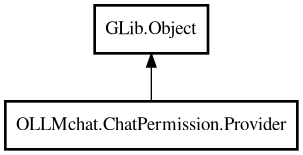

Provider
Object Hierarchy:

Description:
public abstract class Provider : Object
Abstract base class for requesting permission to execute tool operations.
Subclasses can provide different approval mechanisms: - User prompts/dialogs - Automatic approval based on rules - Logging-only
implementations for testing
Includes permission storage system with two layers: - Global (permanent): Stored in tool.permissions.json (only if config_file is set) -
Session (temporary): Stored in memory for current session
Content:
Properties:
- public string config_file { get; set; }
Path to the permissions JSON file (config_file). If empty, ALWAYS
responses are treated as SESSION.
- protected HashMap<string,string> global { public get; }
Global permissions loaded from tool.permissions.json. Key: full path,
Value: permission string
- public string relative_path { get; set; }
Base path for relative path normalization. If set, paths will be
normalized relative to this base path. If empty, no normalization is performed.
- protected HashMap<string,string> session { public get; }
Session storage for temporary permissions
(allow_session/deny_session). Key: full path, Value: permission string (rwx, r--, ---, etc.)
Creation methods:
- protected Provider (string directory = "")
Constructor.
Methods:
- protected PermissionResult check (string perm, Operation operation)
Checks if a permission string allows the requested operation(s).
- public bool check_permission (Tool tool)
Checks if permission is currently granted for a tool operation. This
is a synchronous check that only looks at stored permissions, it does not ask the user.
- protected void handle_response (string target_path, Operation operation, PermissionResponse response)
Handles user's permission response and updates storage accordingly.
- protected void load ()
Loads permissions from config_file. Only loads if config_file is set.
- protected string normalize_path (string path, int depth = 0)
Normalizes a path for consistent storage and lookup. If relative_path
is set, converts relative paths to absolute using that base path. Always resolves symlinks regardless of relative_path setting.
- public async bool request (Tool tool)
Requests permission to execute a tool operation.
- protected abstract async PermissionResponse request_user (Tool tool)
Abstract method for requesting permission from user. Subclasses
implement this to show UI dialogs, prompts, etc.
- protected void save ()
Saves permissions to config_file. Only saves if config_file is set.
- protected string update_string (string current, Operation operation, bool allowed)
Updates a permission string with new operation permission(s).
Inherited Members:
All known members inherited from class GLib.Object
- @get
- @new
- @ref
- @set
- add_toggle_ref
- add_weak_pointer
- bind_property
- connect
- constructed
- disconnect
- dispose
- dup_data
- dup_qdata
- force_floating
- freeze_notify
- get_class
- get_data
- get_property
- get_qdata
- get_type
- getv
- interface_find_property
- interface_install_property
- interface_list_properties
- is_floating
- new_valist
- new_with_properties
- newv
- notify
- notify_property
- ref_count
- ref_sink
- remove_toggle_ref
- remove_weak_pointer
- replace_data
- replace_qdata
- set_data
- set_data_full
- set_property
- set_qdata
- set_qdata_full
- set_valist
- setv
- steal_data
- steal_qdata
- thaw_notify
- unref
- watch_closure
- weak_ref
- weak_unref